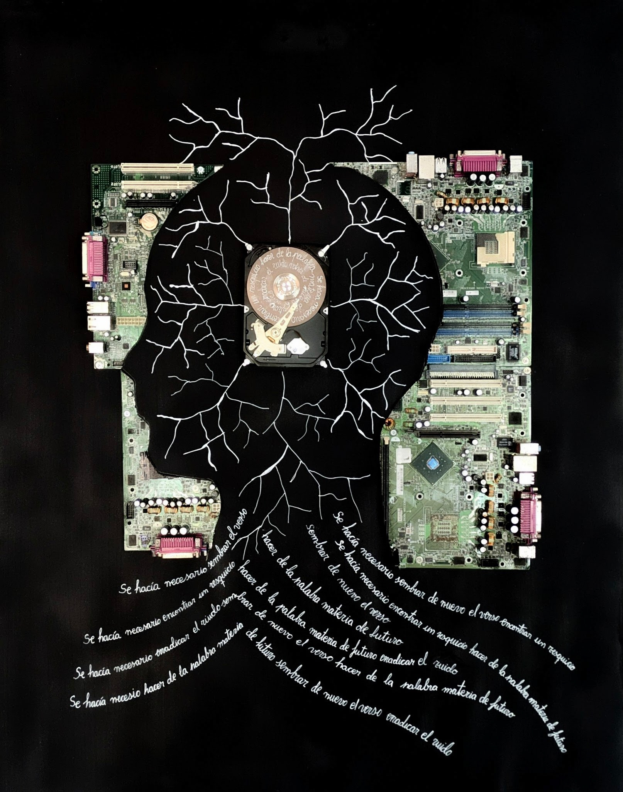

Las dos piezas
Serie completa

I
Virus
Una placa madre de ordenador forma la cabeza. Los árboles neuronales crecen desde el circuito. Las jeringas lo atraviesan. El sistema infectado por su propia lógica.

II
Caos
La segunda pieza de la insurrección. El orden que se deshace. La estructura que ya no puede contenerse a sí misma.